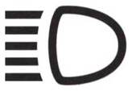
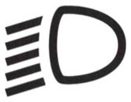
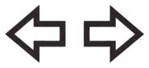
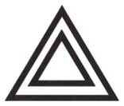
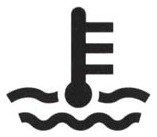
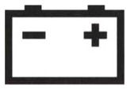
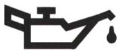
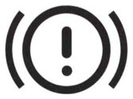
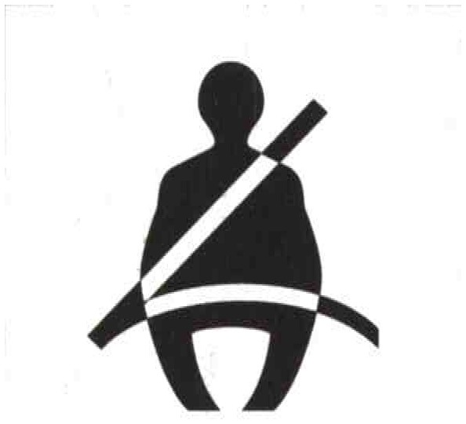

The map for this topic
Four subjects share this topic, and they line up as one skill: seeing (which beam, when), being seen (position lights, plate light, retroreflectors), talking to other drivers (turn signals, the horn), and reading the dashboard (the warning lights and their colors). Most questions reward two ideas: low beams are required far more often than beginners think, and the warning-light color tells you how serious the message is.
For US drivers. The single biggest difference: outside town you must drive with low beams or daytime running lights on even in broad daylight. There is no lights-only-at-night rule here. Motorcycles and mopeds keep their lights on always, everywhere.
Seeing: which beam, when
Low beams: when they are required
- Outside built-up areas and on autostrade, low beams are compulsory day and night. By day you may instead use daytime running lights (DRL). Position lights alone are not enough there, and high beams are not what the day calls for.
- In built-up areas, they are required from half an hour after sunset to half an hour before sunrise.
- They are required in tunnels (galleria), day or night, even if the tunnel is lit.
- They are required in poor visibility from weather such as fog, rain, or snow, together with the position lights.
- At night you must use low beams even where public lighting is good.
- Position lights alone are never a substitute for low beams while driving.
High beams
- Use them outside built-up areas when there is no public lighting, or too little, and no oncoming traffic.
- Switch back to low beams whenever they could dazzle someone: when you meet another vehicle, when you follow one at short distance, whatever kind of vehicle it is, and when they could blind pedestrians or drivers on other roads. Battery drain is not among the reasons.
- As a rule, high beams are prohibited in built-up areas and whenever they would blind others, such as oncoming traffic or in fog. Carrying an injured person changes nothing here, and neither does a tunnel or driving into the sun.
- Flashing the high beams briefly is allowed day or night, in town or out of it, to give a useful warning to prevent an accident or to signal to the vehicle ahead that you intend to pass. It is not confined to extra-urban roads, to daylight, to immediate danger, to an injured passenger or to unlit roads.
Fog and bad weather
- With low beams on, also use the rear fog light if fitted, when visibility drops below 50 meters (55 yd). The rear fog light is the one tied to the 50-meter rule.
- The rear fog light is also for heavy rain or snow, again together with the low beams.
- The front fog lights help in fog or on a winding road.
Being seen
Position lights, plate light, and parking
For US drivers. Position lights are the small lamps that come on at the first position of the light switch, before the headlights. In the US the front ones are usually called parking lights and the rear ones taillights. Their symbol, on the switch and as a green dashboard light, is two small lamps facing away from each other, each with short rays. In Italian the name parking lights (luci di stazionamento or luci di sosta) belongs to a different set, described below, and daytime running lights (luci di marcia diurna) are a third. Keep the name position lights for the lamps that mark the vehicle's outline whenever its lights are on.
- Position lights (luci di posizione) mark the vehicle's presence but do not light the road. They cannot replace low beams in motion.
- Their colors are fixed: white at the front, red at the rear. No other color is allowed.
- The rear license plate must be lit with a white light so the characters are readable.
- The plate light comes on with the lights, not only at night.
- The brake lights are intense red, two of them (three on newer cars), lit only by the brake pedal.
- The reversing light is white, one or two, and comes on by itself in reverse: it both lights the ground behind and announces the maneuver.
- A vehicle parked at the roadside in town at night, where the street is poorly lit, may be marked with parking lights (luci di stazionamento) instead of the position lights: only the ones on the traffic side, white at the front, red at the rear, amber at the side. A vehicle left on the carriageway at night is an obstacle that others must be able to see, so it must be lit unless the street lighting shows it fully or it stands off the carriageway. The parking lights do that job on the side where traffic passes.
- Parking lights are optional equipment, and nothing obliges you to leave any light on in an authorized parking lot.
- A vehicle stopped off the carriageway needs no lights at all, the plate light included.
- Headlights must be correctly aimed and the bulbs type-approved: badly aimed or non-approved lamps can blind oncoming drivers even on low beam, and can cut your own view of the road.
Retroreflectors
- Retroreflectors (catadiottri) reflect light and are not lit themselves. There is nothing to switch on, so they are never "turned on" with the position lights or at dusk.
- They show a vehicle's presence and size, and they make a parked or broken-down vehicle visible at night, which helps if the rear position lights fail.
- Rear reflectors are red. On trailers, semi-trailers and small utility trailers the rear ones are red and triangular.
- Front reflectors on trailers, semi-trailers and small utility trailers are white, marking the front of the towed unit. White is not a mark of flammable cargo.
- Vehicles longer than 6 m, trailers and semi-trailers also carry amber side reflectors, so a detached trailer stays visible from every side at night.
- They do not replace position lights or turn signals, and they signal no turn.
Talking to other drivers
Turn signals
Signal in good time for every change of position, not just turns.
- Signal before every lane change: on a road divided into lanes, on a one-way road when moving to the left lane, and on a road with separate carriageways alike.
- Signal before every turn, to the right as much as to the left, a turn into a driveway included.
- Signal at both the start and the end of a pass: when pulling out and when pulling back in.
- Signal when moving off from the edge of the carriageway into traffic.
- Signal when leaving the carriageway to stop, toward the right edge or the left.
- Signal when entering an autostrada acceleration lane (corsia di accelerazione) and when moving into a deceleration lane (corsia di decelerazione).
- Signal when reversing.
- Signal to park at the left edge of a one-way road.
You do not signal merely to stop at a red light or for an interruption of traffic, to brake, to follow a hairpin bend, or while driving in parallel files without changing lane. There is also no "signal for 500 m afterward" rule.
The horn
- Use the horn only briefly and only for safety, to warn of real, immediate danger.
- In built-up areas its use is restricted to cases of actual danger: approaching an intersection or a cycle crossing is not, by itself, a reason to sound it.
- At night, flash the high beams instead of sounding the horn.
- Outside built-up areas, including near and at intersections, the horn may be sounded whenever it is needed to warn others of your approach.
Use of the horn is the exception, not the rule. Sounding the horn is correct in three cases.
- You are about to pass cyclists or pedestrians on an extra-urban road, where they are legally present and a short warning keeps them from stepping into your path.
- You are carrying an injured or seriously ill person, which also lets you use it where a "no horn" sign otherwise bans it.
- There is real, immediate danger and no gentler way to warn.
Everywhere else the horn stays silent: it is never obligatory in order to pass (neither when pulling out nor when pulling back in), it may not be used repeatedly to drive animals off the road, and it must be used as little as possible to limit noise. Both traps run the same way. A statement that makes the horn a duty is false, and one that bans it outright is false too.
Dashboard lights: color means severity
The dashboard speaks in color before it speaks in symbols. These lights are the spie, in American usage the dashboard lights, and a red one is a warning light.
Red marks a serious condition, and you stop and check. The oil pressure, the coolant temperature, the brake fault, the seatbelt, the handbrake and the hazard lights are red.
Green means a function is simply on and working: the low beams and the turn signals.
Blue means one thing only: the high beams.
A fog-light, turn-signal, beam or defroster light is never red. Only the genuine warnings are red.
The rear fog light and the defroster controls have their own dashboard lights in amber, the third color of the panel, which never marks a serious fault. The front fog lights show green.
Now the symbols, one at a time.

High beams. The symbol is straight horizontal lines from the headlamp shape, on the high-beam switch. Its dashboard light is blue, the only blue on the panel, and it is not green, not a fog light, and not a reminder about the position lights.

Low beams. The little lines slant downward, like the low beam itself, on the low-beam switch. Green means the function is on and nothing is wrong, and the light is not blue, not the high beams, not the fog light, not the position lights, and not a turn signal.

Turn signals. The symbol is two arrows, on the turn-signal control, and the light is green and flashing in time with the signals, not red, and it has nothing to do with the position lights.

Hazard lights. The double triangle switches on all four turn signals at once. Its light is red, and it is a device for emergencies.
The hazard lights come on only by the driver's hand, never automatically in a crash. The symbol is unrelated to the physical warning triangle in your trunk, which it does not operate and does not replace, and it is not the handbrake light.
You use them while you set out or collect the warning triangle, when a breakdown forces you to crawl, when your vehicle is being towed, at a sudden slowdown or queue, and when a stopped vehicle obstructs the carriageway.
Those are the only cases. In ordinary heavy traffic you keep a steady speed and a safe distance and leave the hazard lights off.

Coolant temperature (red). The engine's cooling liquid is too hot, above the maker's limit; the light is paired with the temperature gauge. It does not report the liquid's level, it does not report the oil temperature, of the engine or of the gearbox, and it is not the washer-fluid filler.

Charging fault (red). The alternator, the generator, is not charging the battery as it should. The light does not mean a flat or overcharged battery, it is not an instruction to replace it, and it is never an instruction to "reverse the cables."

Oil pressure (red, never amber). When it is lit while driving, the pressure of the engine's lubricating oil is too low, and you stop the engine at once to avoid serious damage. When it is out while driving, the pressure is normal. It does not report the oil level or consumption, its temperature, or the gearbox oil, and it is not a service reminder.

Braking-system fault (red). The cause may be worn pads or low brake fluid, and the message is to have the brakes seen to quickly. The light does not report the engine computer, an open door, high voltage or the extinguisher, and it is not a service or inspection reminder.

Seatbelt (red, not amber). A belt, the driver's or a passenger's, is unfastened. The light usually comes with a chime, it cannot be switched off from the dashboard, and it does not adjust the pretensioner.
Summary of key points
- Low beams are compulsory outside towns and on autostrade day and night (DRL allowed by day), in tunnels even if lit, in poor weather, and in town from ½ h after sunset to ½ h before sunrise.
- Position lights alone never replace low beams in motion.
- High beams are only for outside towns with no lighting and no oncoming traffic. Flashing them to warn or to signal a pass is allowed anywhere.
- Use the rear fog light when visibility is under 50 m or in heavy rain or snow. The plate is lit white.
- Signal for every lane change, turn, and the start and end of a pass, when moving off or leaving the road, and when reversing. Do not signal for stopping at a red light. The horn is brief, and only for real danger. At night flash the high beams instead.
- Dashboard-light colors. Red is serious (oil, coolant, brakes, belts, hazard). Green is on (low beams, turn signal). Blue is high beams.
- Symbol meanings. The battery means not charging, the oil can means low pressure and stop the engine, the thermometer means coolant too hot, and the circled ! means a brake fault. Horizontal beam lines mean high beams, and slanted lines mean low beams.